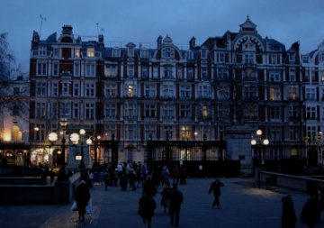

Quincy Lehr
At Dusk
The scene is set at dusk when I recall the way
she’d smile, a thin-lipped tug that hinted at
an alto laugh, but waning, just as sure as dusk
would only last a moment, then expire.
I know that there were mornings in the summer sun
and that her skin would tan, but I can’t see
it in the shade of memory; she’s always pale —
a promissory note from day to night.
I dream of transmutations of a rising moon,
the waning of the sun, and waxing stars,
but wake before the shadows dissipate with dawn
and sense her absence in the empty sheets.
Although I realise that dreams are rummages
through all the junk that moulders in our minds
— attics of useless stuff that we can’t throw away —
the evening light still lingers on the dust.

Quincy R. Lehr was raised in Norman, Oklahoma in the U.S. and presently lives in Brooklyn, having returned after two years in Ireland. His work has appeared in journals including The Chimaera, Crannog, Iambs & Trochees, The Dark Horse, The Raintown Review, The Shit Creek Review, and WOW! Magazine. His first book of poetry, Across the Grid of Streets, was published by Seven Towers in April 2008.
|